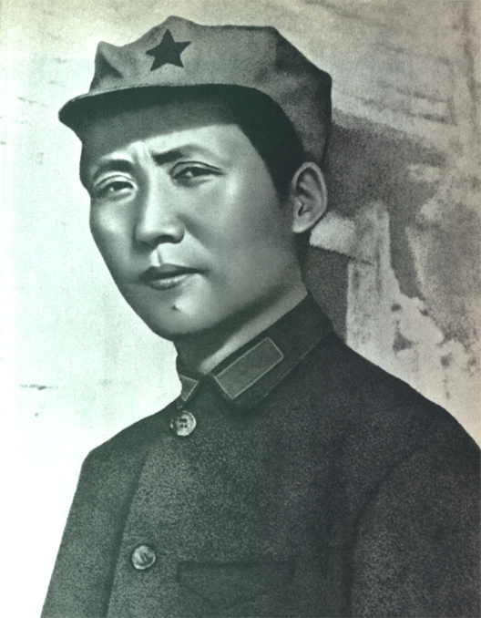

Home
Welcome to the
MAO
ZEDONG
Internet
Library

"A single spark can start a prairie fire."
— Mao Zedong, A Single Spark Can Start a Prairie Fire, 1930
Featured work
On Contradiction
C O N T E N T S
--1926--
Analysis of the Classes in Chinese Society
--1927--
Report on an Investigation of the Peasant Movement in Hunan
--1929--
On Correcting Mistaken Ideas in the Party
--1930--
A Single Spark Can Start a Prairie Fire
Oppose Book Worship
--1934--
Be Concerned With the Well-Being of the Masses, Pay Attention to Methods of Work
--1937--
On Practice
On Contradiction
Combat Liberalism
--1938--
On Protracted War
--1939--
In Memory of Norman Bethune
--1940--
On New Democracy
--1942--
Talks at the Yenan Forum on Literature and Art
--1944--
Serve the People
--1945--
The Foolish Old Man Who Removed the Mountains
--1949--
On the People's Democratic Dictatorship
--1957--
On the Correct Handling of Contradictions Among the People